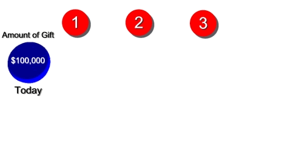
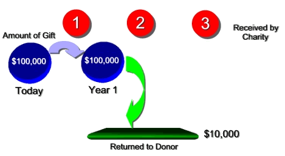
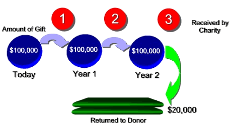
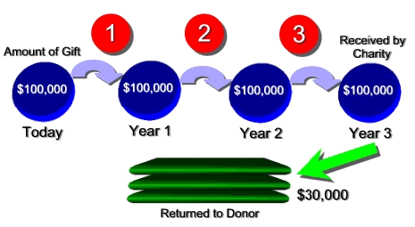
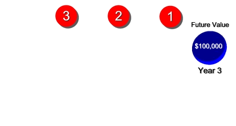
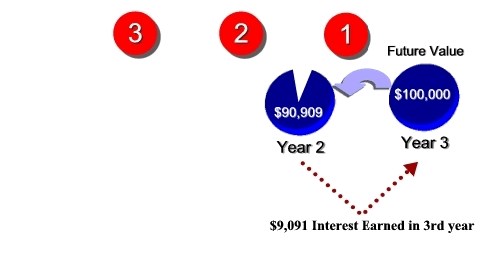
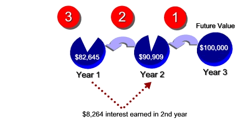
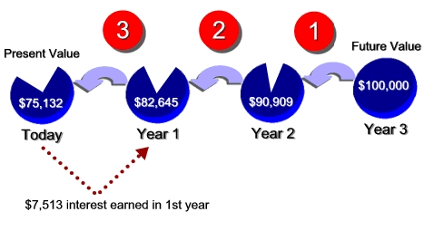

Gifts of Future Interest
It is possible to take an income tax deduction on gifts that are of a future interest. In other words, the gift is irrevocably made today, but the charity will not receive the asset until some future point in time. These gifts, though, must satisfy certain requirements, as described in the Internal Revenue Code (some of which will be discussed later in this course).
If the gift is for a fixed amount, let's say $100,000, it is certainly worth less to the charity than it would be if the transfer were made today. If the charity received the gift today, it could invest the money and generate additional income. This is income that it forfeits by not receiving the money until some future time.
This is illustrated in the pie diagrams below. In this scenario, assume the current interest rate is 10%. The donor wishes to irrevocably gift $100,000 to a charity. This property is to be held in trust for three years, during which time the donor receives the interest. At the end of three years, the charity is to receive the $100,000. Look at this scenario first from the perspective of the donor; then from the perspective of the charity.
Move your mouse pointer in numerical order to the red buttons below and left-click them to look at this scenario from the donor's perspective.
The donor wishes to make a gift of a future interest in $100,000 to a charity. The donor irrevocably gifts the $100,000 today, but for three years he retains the interest earned on the money. At the end of the three years the charity receives the $100,000 outright. Assume that the current interest rate is 10%.
   1. At the end of year 1, the donor receives $10,000 of interest. The value of the gift is still $100,000.
2. At the end of year 2, the donor receives a second $10,000, while the value of the gift remains at $100,000.
3. At the end of year 3, the donor receives the final $10,000 of income and the $100,000 gift is finally owned outright by the charity.
From the donor's perspective, he initially gifts $100,000 and the value of the gift never changes until the charity receives it. He would like to claim a $100,000 income tax deduction. But was the present value of his gift really worth $100,000? To answer that question, let's look at it from the charity's perspective. We will start with the end of the third year when the charity receives the $100,000 and work our way backward to determine what amount would provide the same benefit to the charity if it were given outright to the charity today instead of in three years. We will assume that the charity could earn 10% each year on the preceding balance.Move your mouse pointer in numerical order to the red buttons below and left-click them to look at this scenario from the donor's perspective.
Let's start with the end of the third year when the charity is to receive the $100,000 and work our way backward to determine what amount would provide the same benefit to the charity if it were given outright to the charity today instead of in three years. We will assume that 10% could be earned each year on the money.
   1. If $90,909 had been available for investment at the end of the prior year, $9,091 could have been earned in interest to provide the $100,000 at the end of the third year.
2. If $82,645 had been available for investment at the end of the first year, then the $8,264 earned during the second year would provide the needed $90,909 needed by the end of the year.
3. If given $75,132 today, the cumulative interest earned over three years would result in the charity receiving $100,000.
The scenario from the charity's perspective is essentially a present value calculation-deriving what present amount is equal to a future amount. With an interest rate of 10%, $75,132 given today is equal to $100,000 given three years from now. This $75,132 is precisely the value of the donor's gift today because the donor retained the right to the income and the charity did not receive the gift for three years. The IRS views this scenario in the same way, and provides discount tables to determine the present value that can be deducted when a gift of a future interest is made. The IRS sets the interest rate (discount rate) that is used in the tables, but allows for such variables as the amount of the annual distribution to the donor and the time horizon before the charity receives the gift.
To gain more insight into how these variables can alter the present value and the value of the charitable deduction, refer to the scenario above and answer the following questions.
Click the question marks at the end of each question to check your response:
If the donor wanted to receive $12,000 per year, taking first from income and then from the corpus, would the present value of the gift to the charity increase or decrease
If the donor wanted to receive $6,000 per year, would the present value of the gift to the charity increase or decrease
If the donor maintained the demand for $10,000 per year, but decided to extend the time before the charity received the gift from 3 years to 6 years, would the present value of the gift to the charity increase or decrease